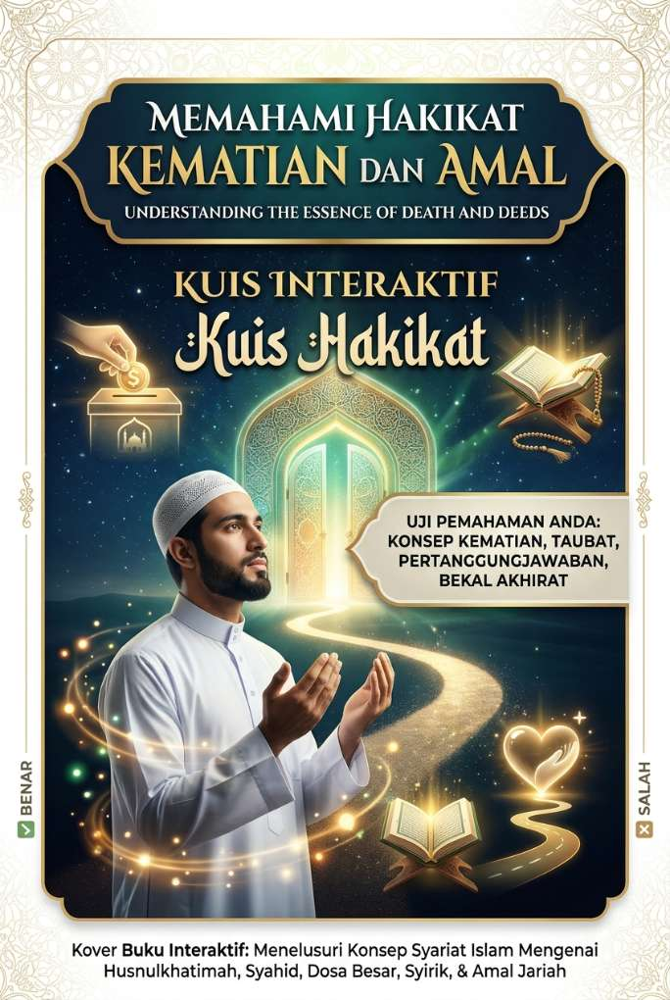

Memahami Hakikat Kematian dan Amal
Kuis Interaktif
Mari uji pemahaman kita mengenai konsep kematian, taubat, pertanggungjawaban amal, dan bekal akhirat sesuai dengan syariat Islam.

Kuis Interaktif
Mari uji pemahaman kita mengenai konsep kematian, taubat, pertanggungjawaban amal, dan bekal akhirat sesuai dengan syariat Islam.
Selama seseorang wafat membawa iman dan tauhid (bebas syirik), ia tidak akan kekal di neraka, meskipun memiliki dosa besar seperti berzina atau mencuri.
Dalil (H.R. Al-Bukhari dari Abu Dzar r.a.)
مَنْ مَاتَ مِنْ أُمَّتِي لَا يُشْرِكُ بِاللَّهِ شَيْئًا دَخَلَ الْجَنَّةَ. قُلْتُ وَإِنْ زَنَى وَإِنْ سَرَقَ قَالَ : وَإِنْ زَنَى وَإِنْ سَرَقَ
"Siapa saja yang mati dari umatku tanpa berbuat syirik kepada Allah sedikit pun, maka dia akan masuk surga." Aku bertanya, "Meskipun dia berzina atau mencuri?" Nabi menjawab, "Ya, sekalipun dia berzina atau mencuri."
Kematian akibat musibah duniawi seperti tenggelam, terkena wabah, atau tertimpa runtuhan bangunan/longsor merupakan salah satu jalan meraih derajat mati syahid di akhirat.
Dalil (H.R. Al-Bukhari & Muslim)
الشُّهَدَاءُ خَمْسَةٌ الْمَطْعُونُ وَالْمَبْطُونُ وَالْغَرِيقُ وَصَاحِبُ الْهَدْمِ وَالشَّهِيدُ فِي سَبِيلِ اللهِ
"Orang yang mati syahid itu ada lima: orang yang mati karena wabah, sakit perut, tenggelam, tertimpa reruntuhan bangunan, dan syahid berperang di jalan Allah."
Penderitaan berat akibat penyakit dalam (sakit perut) atau wabah penyakit menular dinilai sebagai pembersih dosa dan digolongkan sebagai syahid.
Dalil (H.R. Al-Bukhari dari Anas bin Malik r.a.)
الطَّاعُونُ شَهَادَةٌ لِكُلِّ مُسْلِمٍ
"Wabah adalah penyebab mati syahid bagi setiap muslim."
Pengakuan lisan tidak bernilai mutlak tanpa adanya ketakwaan yang riil dalam hati dan pembuktian berserah diri hingga akhir hayat.
Dalil (Q.S. Ali Imran [3]: 102)
يَا أَيُّهَا الَّذِينَ آمَنُوا اتَّقُوا اللَّهَ حَقَّ تُقَاتِهِ وَلَا تَمُوتُنَّ إِلَّا وَأَنْتُمْ مُسْلِمُونَ
"Wahai orang-orang yang beriman, bertakwalah kepada Allah dengan sebenar-benar takwa kepada-Nya dan janganlah kamu mati kecuali dalam keadaan muslim."
Mempertahankan harta benda dari aksi kejahatan secara sah dan terhormat dinilai sebagai perjuangan mulia (syahid).
Dalil (H.R. Abu Dawud dan Ahmad)
مَنْ أُرِيدَ مَالُهُ بِغَيْرِ حَقٍّ فَقَاتَلَ فَقُتِلَ فَهُوَ شَهِيدٌ
"Siapa saja yang akan diambil hartanya tanpa kebenaran, kemudian ia mempertahankannya, lalu ia terbunuh, ia adalah syahid."
Kalimat tauhid di akhir hayat hanya akan sah dan berharga apabila pelakunya sepenuhnya bersih dari dosa kesyirikan selama hidupnya.
Dalil (H.R. Al-Bukhari dari Abu Dzar r.a.)
أَنَّهُ مَنْ مَاتَ مِنْ أُمَّتِي لَا يُشْرِكُ بِاللَّهِ شَيْئًا دَخَلَ الْجَنَّةَ
"...bahwasanya siapa saja yang mati dari umatku tanpa berbuat syirik kepada Allah sedikit pun, maka dia akan masuk surga..."
Pintu taubat tertutup rapat begitu proses sakaratulmaut berada di kerongkongan, karena batas ajal makhluk sudah pasti dan mengikat.
Dalil (Q.S. Al-A'raf [7]: 34)
وَلِكُلِّ أُمَّةٍ أَجَلٌ فَإِذَا جَاءَ أَجَلُهُمْ لَا يَسْتَأْخِرُونَ سَاعَةً وَلَا يَسْتَقْدِمُونَ
"Setiap umat mempunyai ajal (batas waktu). Jika ajalnya tiba, mereka tidak dapat meminta penundaan sesaat pun dan tidak dapat (pula) meminta percepatan."
Harta yang disedekahkan atau diinfakkan di jalan Allah selama masa hidup sehat justru menjadi aset abadi yang mengalirkan pahala ke alam kubur.
Dalil (H.R. Ibnu Majah dari Abu Hurairah r.a.)
أَوْ صَدَقَةً أَخْرَجَهَا مِنْ مَالِهِ فِي صِحَّتِهِ وَحَيَاتِهِ يَلْحَقُهُ مِنْ بَعْدِ مَوْتِهِ
"...atau sedekah yang dibelanjakannya dari hartanya semasa hidupnya, akan sampai kepadanya sepeninggalnya."
Walaupun sedekah merupakan amalan istimewa, Al-Qur'an menegaskan bahwa sebaik-baik penunjang dan bekal mutlak di akhirat adalah ketakwaan.
Dalil (Q.S. Al-Baqarah [2]: 197)
وَتَزَوَّدُوا فَإِنَّ خَيْرَ الزَّادِ التَّقْوَى وَاتَّقُونِ يَا أُولِي الْأَلْبَابِ
"Berbekallah karena sesungguhnya sebaik-baik bekal adalah takwa. Bertakwalah kepada-Ku wahai orang-orang yang mempunyai akal sehat."
Allah berkomitmen memberikan balasan pahala terbaik serta kehidupan mulia bagi orang beriman laki-laki maupun perempuan yang beramal saleh.
Dalil (Q.S. Al-Nahl [16]: 97)
مَنْ عَمِلَ صَالِحًا مِنْ ذَكَرٍ أَوْ أُنْثَى وَهُوَ مُؤْمِنٌ فَلَنُحْيِيَنَّهُ حَيَاةً طَيِّبَةً وَلَنَجْزِيَنَّهُمْ أَجْرَهُمْ بِأَحْسَنِ مَا كَانُوا يَعْمَلُونَ
"Siapa yang mengerjakan kebajikan, baik laki-laki maupun perempuan, sedangkan dia seorang mukmin, sungguh, Kami pasti akan berikan kepadanya kehidupan yang baik..."
Taubat yang murni dan tulus (nasuha) berfungsi menghapus dosa-dosa serta kesalahan masa lalu agar terhindar dari siksaan.
Dalil (Q.S. Al-Tahrim [66]: 8)
تُوبُوا إِلَى اللَّهِ تَوْبَةً نَصُوحًا عَسَى رَبُّكُمْ أَنْ يُكَفِّرَ عَنْكُمْ سَيِّئَاتِكُمْ وَيُدْخِلَكُمْ جَنَّاتٍ
"Bertobatlah kepada Allah dengan tobat yang semurni-murninya. Mudah-mudahan Tuhanmu akan menghapus kesalahan-kesalahanmu dan memasukkanmu ke dalam surga..."
Menutup usia di saat menunaikan amalan saleh (seperti puasa atau sedekah) karena mengharap rida Allah adalah jaminan husnulkhatimah menuju surga.
Dalil (H.R. Ahmad dari Huzaifah r.a.)
وَمَنْ صَامَ يَوْماً ابْتِغَاءَ وَجْهِ اللهِ خُتِمَ لَهُ بِهَا دَخَلَ الْجَنَّةَ
"Siapa saja yang berpuasa pada suatu hari mengharapkan keridaan Allah, kemudian dia tutup usia dalam keadaan demikian (puasa), dia akan masuk surga."
Masalah utang tetap mengikat dan diperhitungkan secara ketat. Bahkan dosa seorang syahid sekalipun tidak diampuni pada bagian utangnya.
Dalil (H.R. Muslim)
يُغْفَرُ لِلشَّهِيدِ كُلُّ ذَنْبٍ إِلَّا الدَّيْنَ
"Orang yang mati syahid itu diampuni semua dosanya kecuali utang."
Utang ibadah atau nazar (seperti puasa atau haji) yang belum tuntas dikerjakan hingga wafat dapat digantikan penyelesaiannya oleh ahli waris.
Dalil (H.R. Al-Bukhari dari Ibnu Abbas r.a.)
حُجِّي عَنْهَا ۖ أَرَأَيْتِ لَوْ كَانَ عَلَى أُمِّكِ دَيْنٌ أَكُنْتِ قَاضِيَةً اقْضُوا اللهَ
"Hajikanlah dia (ibumu). Bagaimana menurutmu seandainya ibumu memiliki utang, apakah kamu akan melunasinya? Tunaikanlah hak Allah, sesungguhnya hak Allah lebih utama untuk ditunaikan."
Amalan sedekah yang diniatkan anak atau keluarga khusus untuk almarhum orang tuanya diakui syariat dan pahalanya mengalir kepada mayit.
Dalil (H.R. Al-Bukhari dari Aisyah r.a.)
فَهَلْ لَهَا أَجْرٌ إِنْ تَصَدَّقْتُ عَنْهَا قَالَ نَعَمْ
"Apakah ia akan memperoleh pahala bila aku bersedekah untuknya?" Beliau menjawab, "Ya."
Amal jariah seperti menyebarkan ilmu, membangun fasilitas umum/masjid, atau meninggalkan anak saleh merupakan investasi pahala yang tidak terputus.
Dalil (H.R. Muslim dari Abu Hurairah r.a.)
إِذَا مَاتَ الإِنْسَانُ انْقَطَعَ عَنْهُ عَمَلُهُ إِلا مِنْ ثَلاثَةٍ إِلا مِنْ صَدَقَةٍ جَارِيَةٍ أَوْ عِلْمٍ يُنْتَفَعُ بِهِ أَوْ وَلَدٍ صَالِحٍ يَدْعُو لَهُ
"Apabila manusia mati, maka terputuslah amalnya kecuali tiga perkara, yaitu sedekah jariah, ilmu yang bermanfaat, dan anak saleh yang mendoakannya."
Alhamdulillah
Semoga kuis ini menambah pemahaman dan memperkuat iman kita semua.
Tulisanku yang lain, silakan kunjungi https://hnf-nulis.github.io/ku
Bila ingin bagikan tulisan ini, dipersilakan ketuk tombol berbagi di bawah.